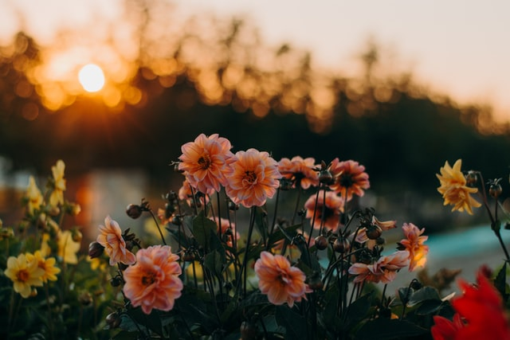
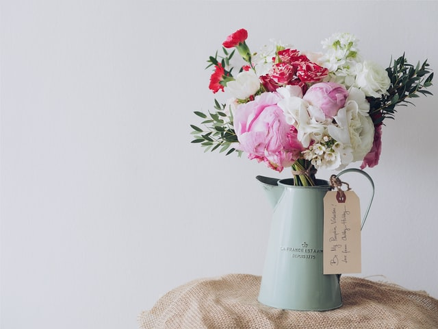
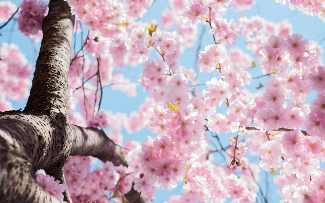
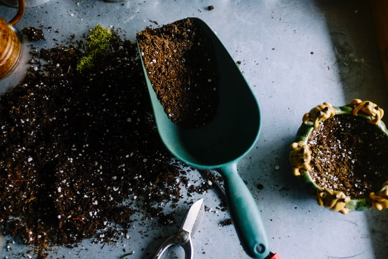
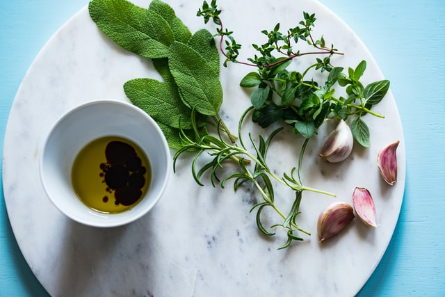

My New Garden
In addition to web design, I've been learning two new hobbies: gardening, and photography. It's been a lot of fun.
I thought I'd make a new blog post to show off what I've been doing.
These were the first flowers I planted, and I love how they look.
I picked some flowers to practice arranging, and decided to practice photography, too. I thought this picture looked great cropped in a circle.
I didn't plant these cherry trees, but I love how they look! I make get this photo framed.
If you pick up gardening as a hobby, you can't be afraid to get your hands dirty!
Some of my handiwork was really tasty!